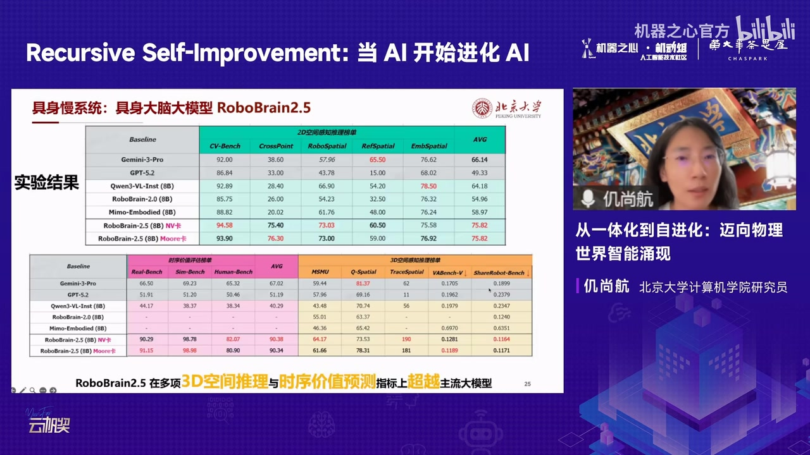
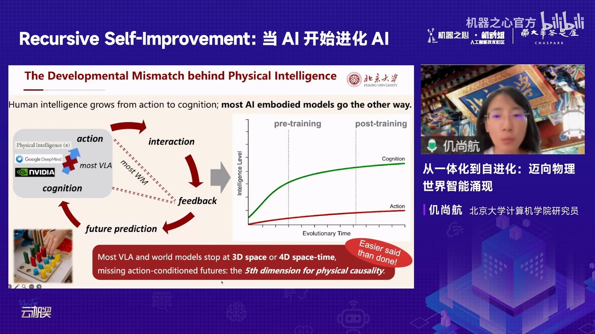
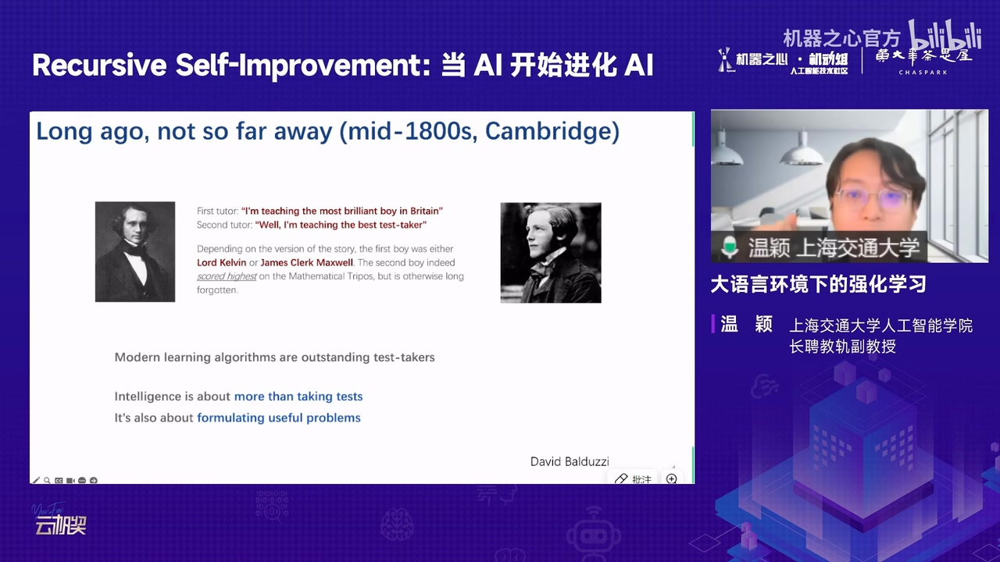
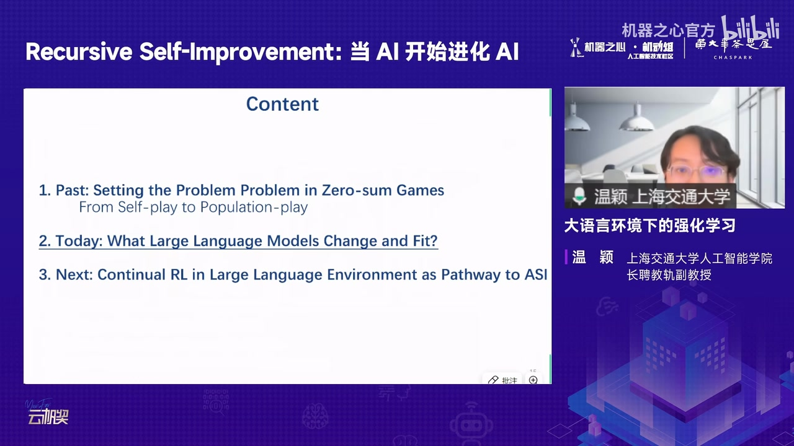
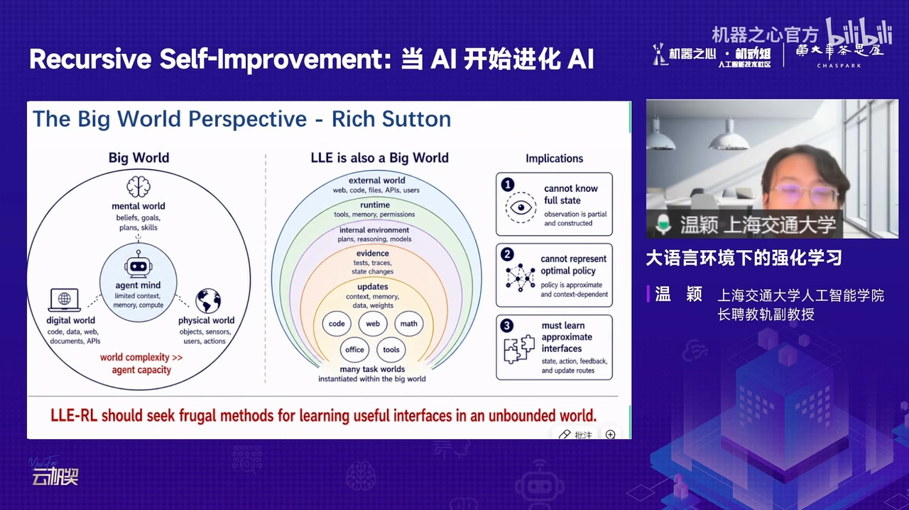
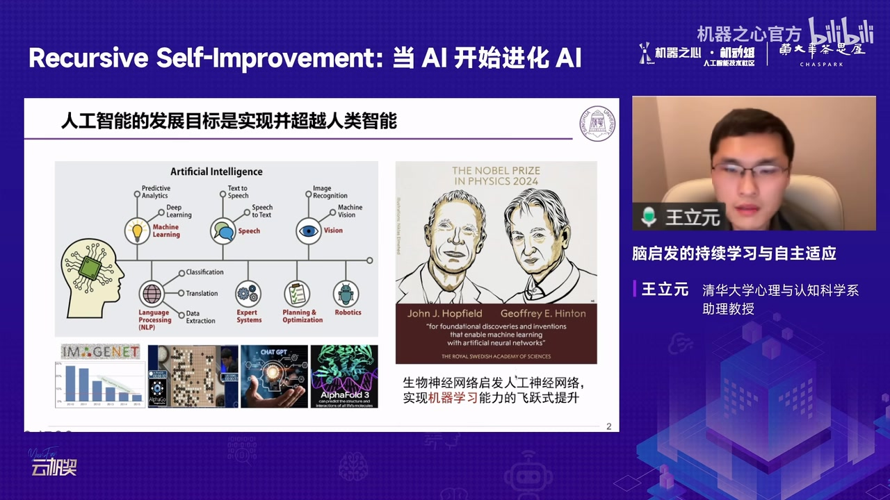
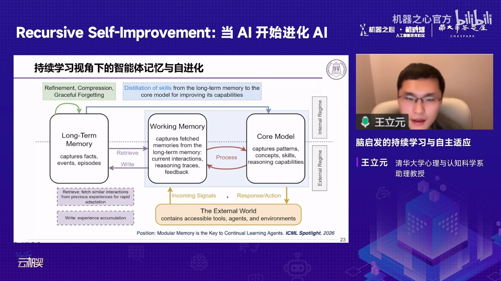
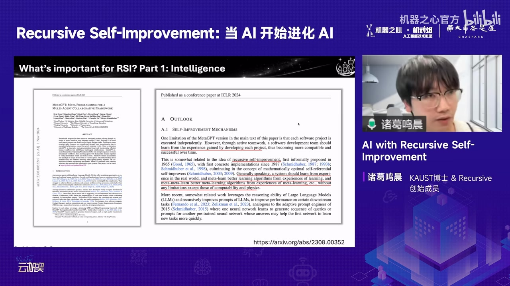
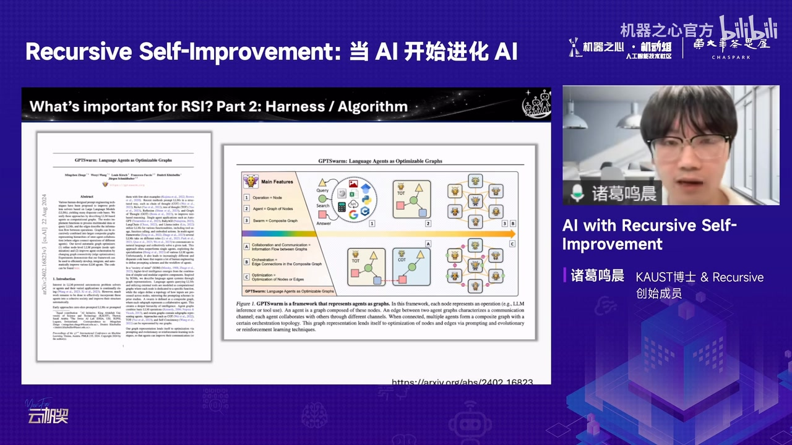
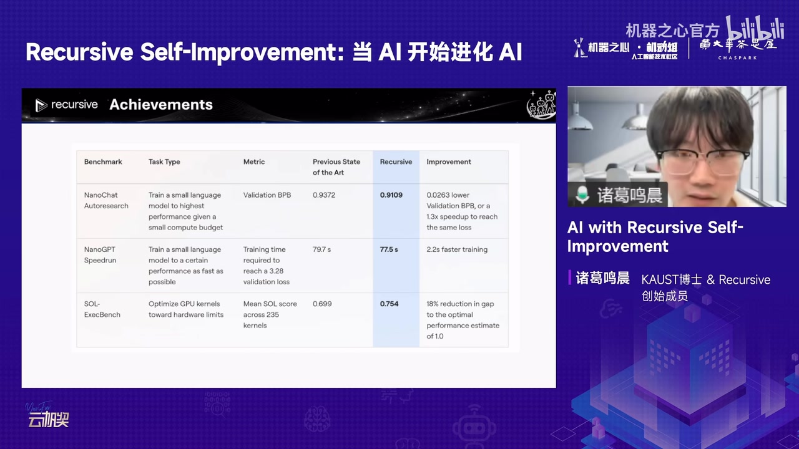

01｜全场地图：自我改进的四种尺度
四场报告分别把“AI 改进 AI”放在身体、学习环境、长期记忆和研发系统层面；共同点是都需要闭环，而非一次性训练。
| 时间 | 主题 | 核心问题 |
|---|---|---|
| 06:00–40:20 | 具身与物理智能 | 感知—行动如何在真实世界持续改进 |
| 40:40–76:00 | 大语言环境中的强化学习 | 系统如何自动提出下一轮有价值问题 |
| 78:00–110:50 | 类脑持续学习与记忆 | 如何学习新知识而不灾难性遗忘 |
| 111:10–139:00 | RSI 系统与产业 | 智力、Harness 与验证器如何组成改进闭环 |
02｜物理世界：从大脑/小脑到世界模型
具身智能的难点不只是会运动，而是把感知、规划、控制与环境反馈闭合起来，并跨机器人本体迁移。
06:00–18:00 第一位讲者以“离身智能到具身智能”的四个跨越开场：任务从开环到闭环，身体与传感器更多样，标准化更难，安全容错更严格。RoboBrain 系列承担“大脑”规划与空间理解，小脑负责高频控制。

22:00–40:20 TwinRL 用数字孪生扩展真实机器人强化学习的探索空间，并观察 SFT 会限制策略可达区域。报告随后主张认知与行动应螺旋上升，世界模型不仅预测视觉，还应表征动作条件下的因果后果。

03｜语言环境：从自博弈到自动构造问题
真正开放式的自我改进不仅要解题，还要能发现、抽象并提出下一轮值得学习的问题。
40:40–56:30 第二位讲者回顾零和博弈自博弈：它能自动产生对手与课程，但若评估偏序不稳定、目标缺乏传递性，单纯 self‑play 也无法保证持续单调进步。

56:30–75:40 报告把 LLM 自我改进放到 AutoML、元学习与开放式进化的历史中：候选生成越来越便宜，瓶颈转向强评估器和可扩展验证循环。大语言环境比传统 MDP 更开放，智能体必须同时学习观察接口、内部世界模型、策略、记忆与验证方式。


04｜生物启发：持续学习、主动遗忘与空间记忆
与一次性吸收海量数据不同，生物智能依靠持续交互、选择性记忆、主动遗忘和结构化空间表征适应开放世界。
78:00–95:50 第三位讲者把灾难性遗忘概括为“词典与婴儿”的差异：静态知识库可以很大，但智能来自不断更新。报告从突触稳定性、模块化、生成回放和主动遗忘等神经机制推导持续学习算法。

96:00–110:50 面向具身智能，报告用地标、路径和鸟瞰知识构造结构化空间记忆，并提出核心模型、工作记忆、长期记忆与外部环境的闭环；记忆不仅服务检索，也决定下一步如何学习。

05｜RSI 系统：智力、Harness 与验证器
递归自我改进需要把“能改写自己”从口号变成可形式化、可评估、可替换的工程循环。
111:10–120:50 第四位讲者从 Gödel Machine 的自重写思想讲起：早期理论要求证明新版本更好，现代机器学习则更多依靠基准与经验评估。RSI 的第一前提仍是足够强的模型智力。

125:00–138:40 Harness 把 Agent 形式化为节点与边构成的图，使优化从手工改代码转为搜索结构、通信与工具编排；验证器负责在长时程任务中给反馈。更严格的 RSI 还要求参数、数据、目标、架构和整体代码都能进入改进循环。


预测边界：讲者关于生产率倍数、公司路线、RSI 时间表与产业影响的判断属于演讲观点，不是确定性预测。
证据边界：本文忠实整理视频中的讲解、论文图表与演讲者判断，并非对论文复现实验或独立同行评审。自动转录中的专名已结合幻灯片校正；仍不确定的缩写和动态数字应以原论文或项目页面为准。